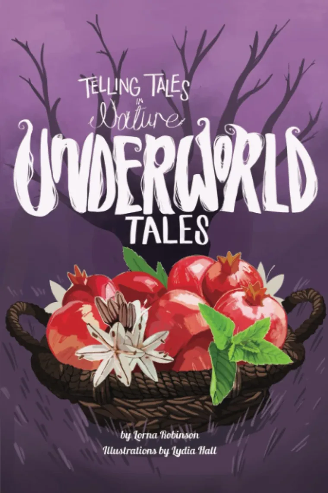
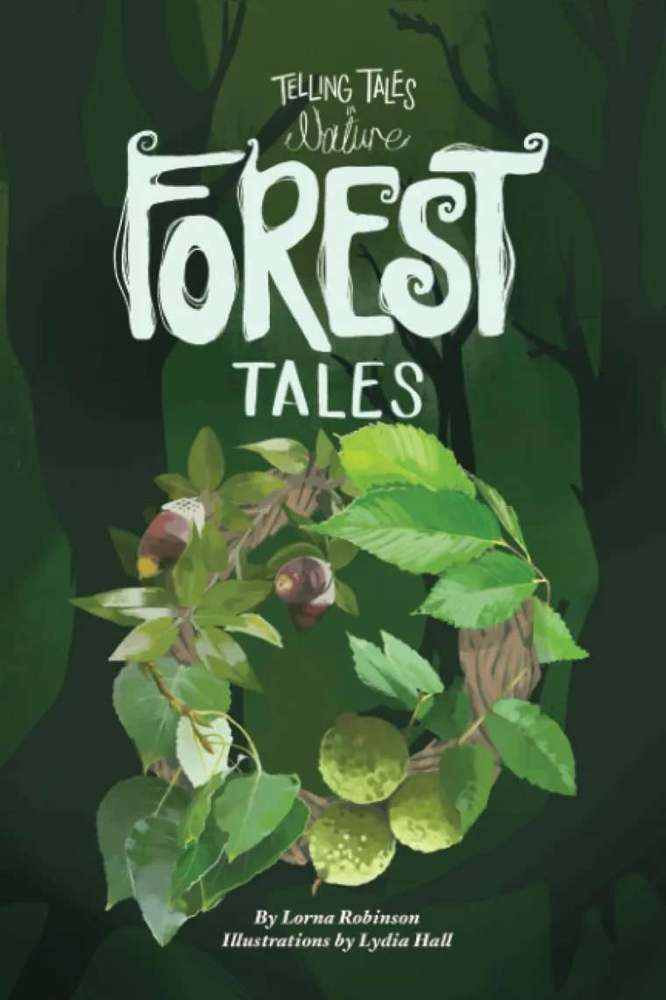
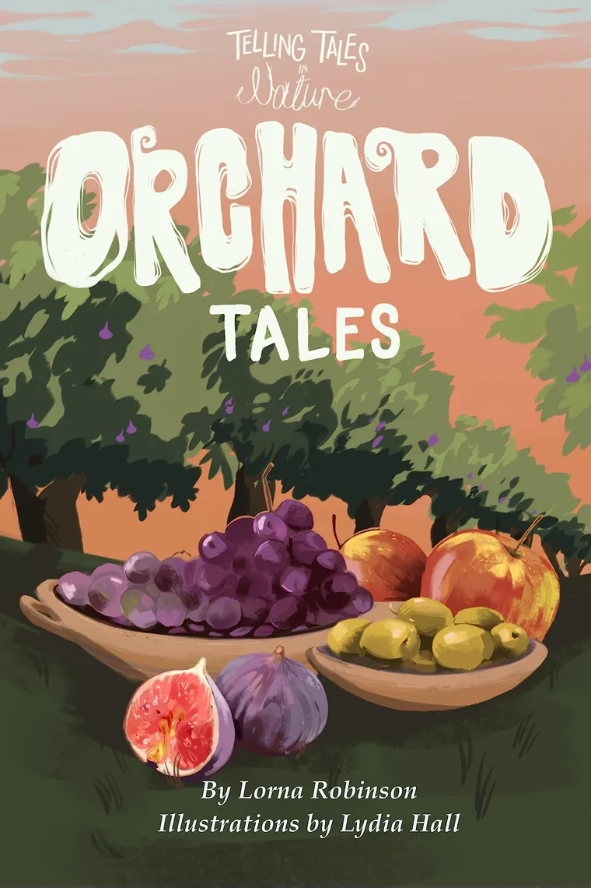
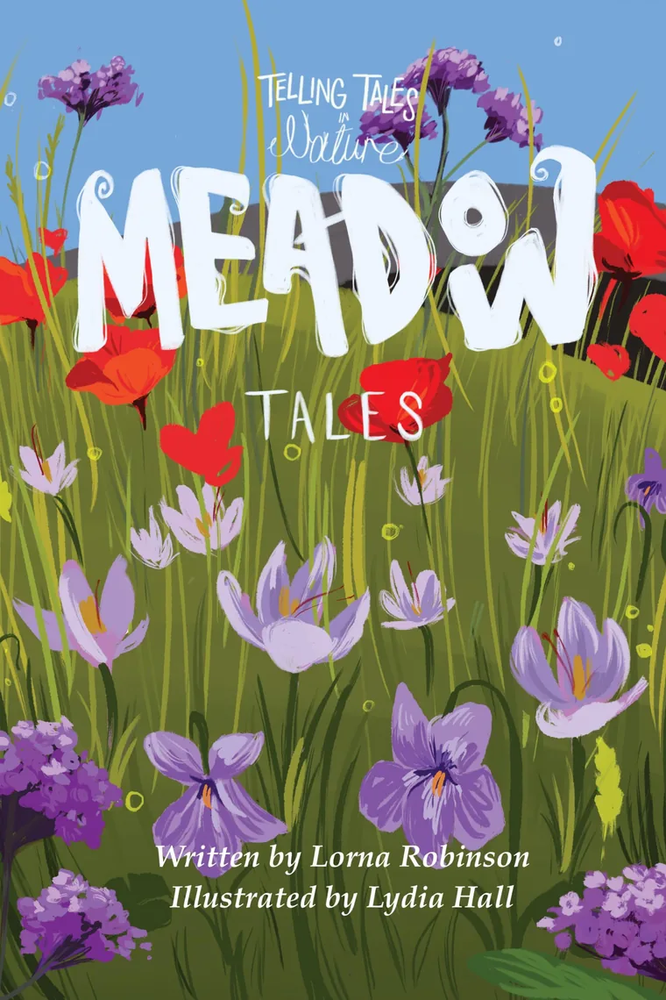
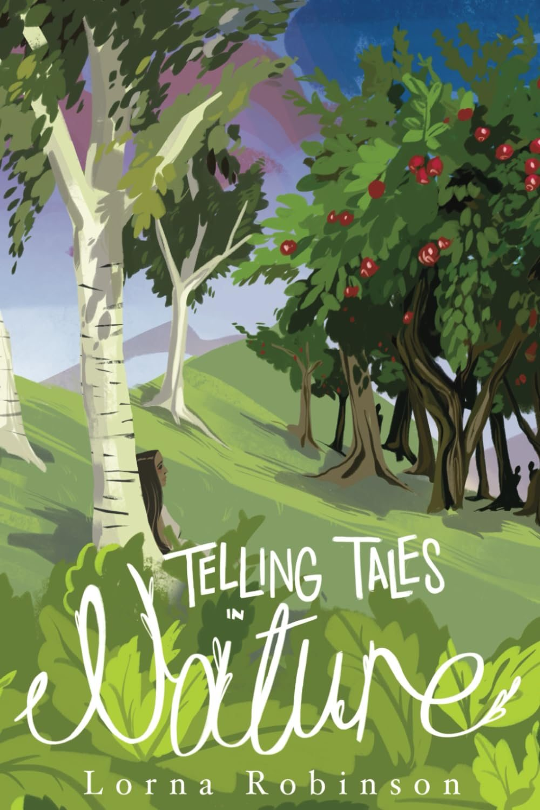

Telling Tales in Nature
- Underworld Tales
- Forest Tales
- Orchard Tales
- Meadow Tales




Four books in one

A collection of myths retold from the perspective of the spirits of plants.
This compendium includes all four books in the Telling Tales in Nature series: Underworld Tales, Forest Tales, Orchard Tales, and Meadow Tales.
Each chapter features an introduction to the plant with botanical drawings, followed by a retelling and reimagining of the myth from the perspective of the plant spirit. The stories are accompanied by brief notes on sources and explanations of the retellings.
Written by Lorna Robinson with illustrations by artist Lydia Hall.
Lorna's Latin and Greek books, Telling Tales in Latin, Distant Lands and Telling Tales in Greek, are on the About page.